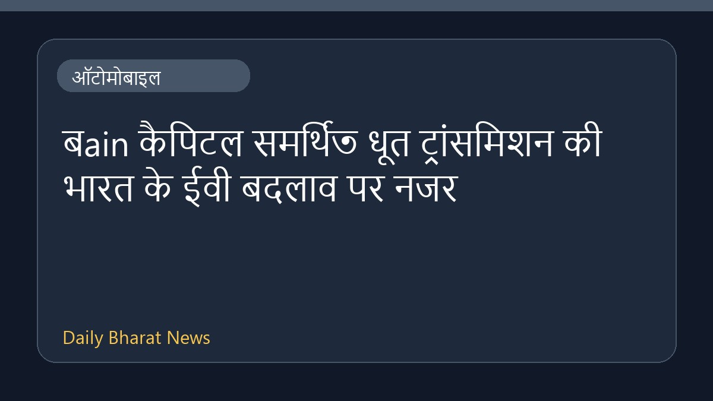

बain कैपिटल समर्थিত धूत ट्रांसमिशन की भारत के ईवी बदलाव पर नजर

बain कैपिटल समर्थित धूत ट्रांसमिशन भारत में इलेक्ट्रिक वाहनों के बढ़ते चलन को अपनी वृद्धि का मुख्य आधार बनाने की योजना बना रहा है। कंपनी देश में हो रहे इस बड़े बदलाव के जरिए अपने कारोबार को आगे बढ़ाने की तैयारी में जुटी है। इस संबंध में उपलब्ध जानकारी फिलहाल काफी सीमित है, लेकिन ऑटोमोबाइल सेक्टर में ईवी सेगमेंट को लेकर कंपनियों की रणनीति स्पष्ट होती नजर आ रही है।
मूल स्रोत: Automobile News Sources
Bain Capital-backed Dhoot Transmission bets on India EV shift to drive growth - Reuters ↗
Bain Capital-backed Dhoot Transmission bets on India EV shift to drive growth - Reuters ↗